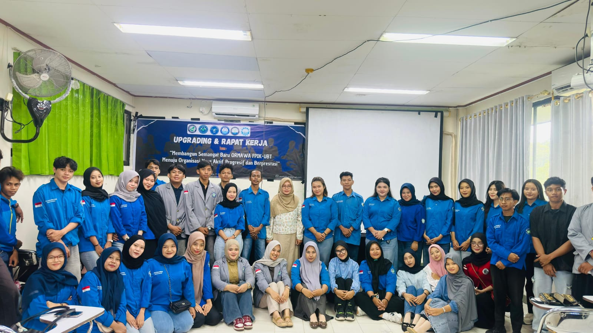

Kegiatan BPM

Kegiatan Upgrading Ormawa
Kegiatan peningkatan kapasitas organisasi mahasiswa FPIK UBT.
Pengawasan Organisasi
BPM melakukan pengawasan terhadap kegiatan organisasi mahasiswa.
Kegiatan Sosial
Kegiatan sosial mahasiswa untuk mempererat solidaritas FPIK UBT.